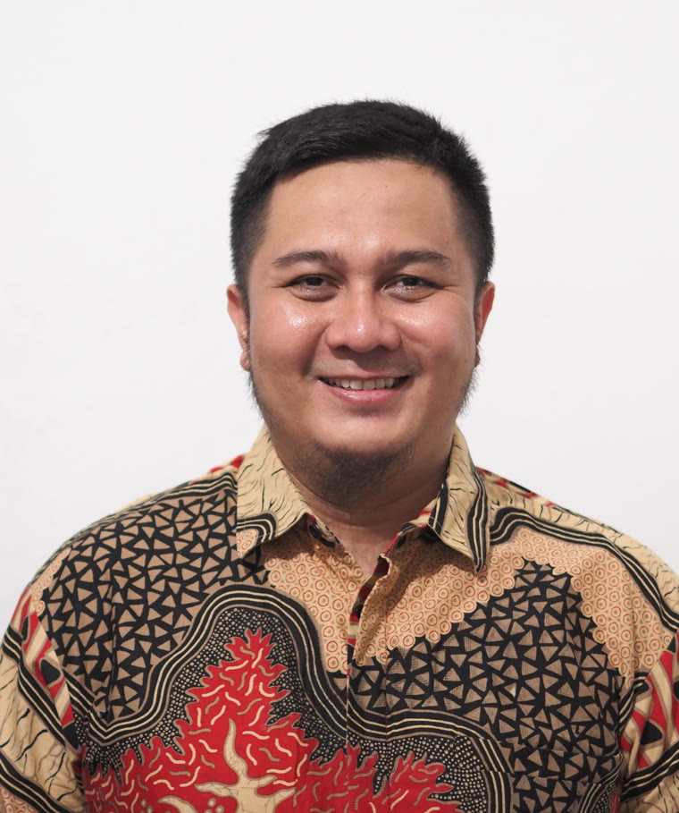
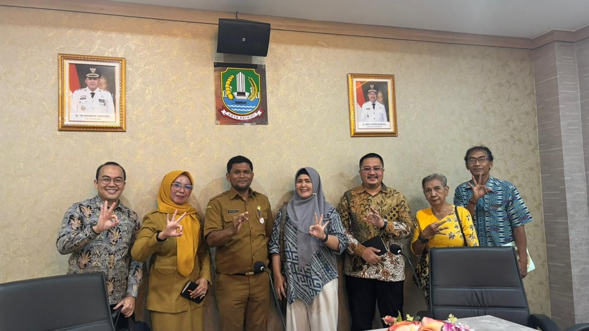
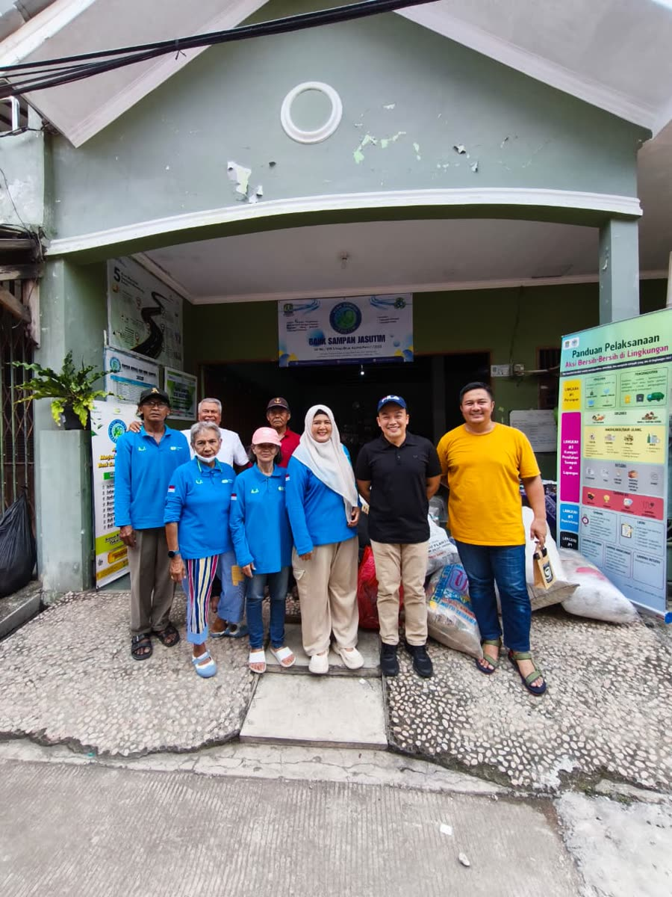
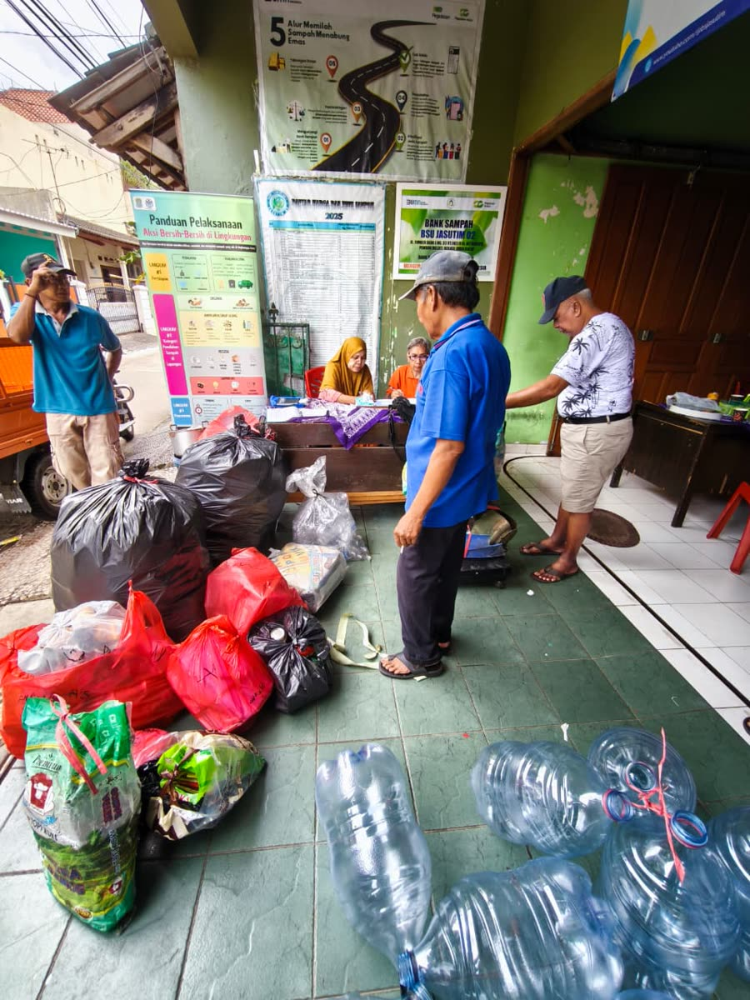
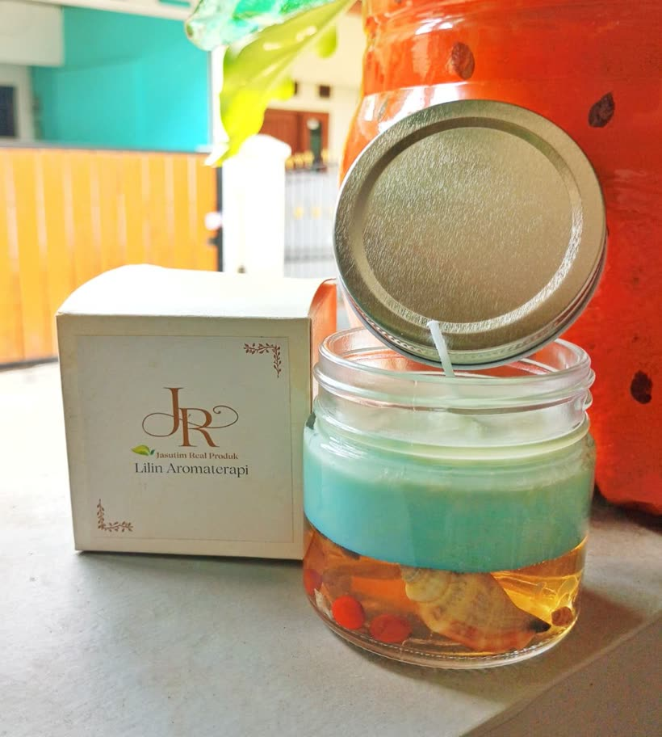

Yayasan Jalandra Suwara Timu (JASUTIM) · Bekasi, Indonesia
Muhamad Muslih
Chairman of the Board of Trustees & Advisor on Sustainable Development
Bringing product and commercial discipline to community-based circular economy — turning grassroots recycling into a financeable enterprise, not a charity.

An operator's discipline, applied to a real circular economy.
I chair the Board of Trustees and advise on sustainable development at Yayasan JASUTIM, a community waste-bank and circular-economy foundation in Bekasi, Indonesia. For over 13 years I built and scaled products across banking, fintech, consulting, and automotive. Today I channel that operator's discipline into one conviction: community recycling can become an investable enterprise, and that is how grassroots circular economy reaches real scale.
The mission
JASUTIM at a glance
A legally established foundation (Kemenkumham, Dec 2025), built on a waste bank operating for over four years. My role:
- Strategic direction and oversight as the foundation's highest organ.
- Aligning programs with the SDGs and the triple bottom line — social, environmental, economic.
- Bridging the foundation to sustainability partnerships and financing.


The flagship initiative
A bankable material-recovery scale-up
Our roadmap to 2030 grows material recovery from ~3 to 15+ tonnes per month, paired with selective downstream processing — PET shredded into recycled flakes and refuse-derived fuel (RDF) offtake to industry — and value-added products such as aromatherapy candles made by women in the community. Structured for green finance — working capital and equipment financing — with revenue from recovered material, value-added products, and waste-management services.
Designed as an investable project — one that can connect Japanese capital and technology with ASEAN feedstock and offtake across plastic circularity, RDF / waste-to-energy, and EPR-based financing.


What I bring
Commercial & product rigor
Turning ideas into scalable, measurable products — the same discipline that built products at national scale.
Systems & data
Building the pipelines and unit-economics view a fundable project needs to stand up to investors.
AI & automation
Doing more with lean teams — so a grassroots foundation can punch above its size.
Career journey
Education & recognition
Education
- Master of Management President University · ongoing
- B.Sc. in Information Systems President University · 2014
Fellowships & awards
- IATSS Forum Fellow Japan · 2024
- YSEALI AI FutureMakers U.S. Dept of State · 2025
- YSEALI Networking Fund U.S. Dept of State · 2025
- Extra Miles Award Citibank · 2016
Certifications
- Professional Scrum Product Owner Scrum.org
- Professional Scrum Master Scrum.org
- Growth Product Manager Udacity
- AI for Leaders Microsoft / LinkedIn
Let's build circular economy that scales.
Reach me in my capacity at Yayasan JASUTIM.